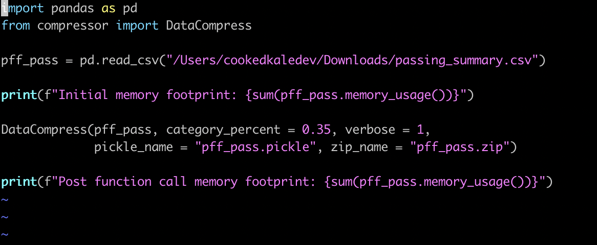

As great as the read_csv() method in the Pandas library is, without further intervention it will often type cast columns inefficiently in terms of space complexity. In order to tackle this problem in a repeatable way rather than address the size of the memory footprint, I took the liberty of writing a quick module that could be imported and handle this issue automatically. The full code will be attached below, but the general idea of the function is to loop through the columns of a given dataframe and asses the values of each to see if they can be stored as a more efficient type. While the function has a large number of if statements, the only nesting is the if statements inside of the lone for loop, so with the exception of very large dataframes the time complexity should scale relatively well. If time complexity is more important than space complexity for a given project, then this function may not provide the best trade off, but for space complexity sensitive projects this could provide a useful tool. The general actions the function takes is reducing the number of bits associated with ints based on the maximum value of a column and converting objects or strings to category variables based on the number of unique values. The available parameters are what threshold should be used to convert a variable to a category variable, the verbosity level of the function (how much data you would like to be printed about the change in memory footprint) and whether or not the final frame should be stored in a pickle or zip file. The full documentation of the function can be seen below, as well as a small example / proof of concept of the function in use.
The full code can be found at:
Pandas Data Compressor Github repo
Here is just a quick vim file importing the module, adding print statements to show our starting and ending memory footprints, setting verbosity to 1 so we will see the percent decrease in our memory footprint on output, and saving the new dataframe to both a pickle and zip file.
Below you will see the output from running the test script from above using the module, as well as the files being created in the same directory as the scripts.